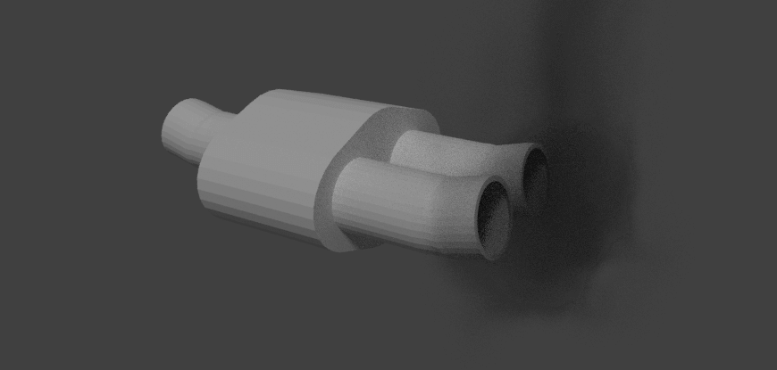

Ozone Gas
| Ozone | ||
|---|---|---|
|
|
||
| Info | ||
|
Ozone can worsen asthma and damage automobile finishes and building surfaces exposed to it. |
||
|
While ozone is pure oxygen, our lungs cannot use it when we breathe. |
||
|
The word "ozone" means smelly in Greek because the gas has a strong odour. |
||
Why Ozone?
Ozone is a molecule consisting of three connected oxygen atoms. Due to its distinct chemical properties, it has a dual purpose in the atmosphere. Ozone forms a layer in the stratosphere that protects us from the sun by absorbing damaging ultraviolet radiation before it reaches the surface. The ozone hole mentioned in the news is a decrease in ozone at high levels caused by gases called chlorofluorocarbons (CFCs), which destroy ozone at cold temperatures high up in the atmosphere. The ozone hole has been linked to increases in skin cancers in people that spend a lot of time outdoors. However, on earth, ozone causes problems. A typical ozone molecule's lifespan is only hours to days, but it can still affect the climate drastically. It has been associated with spikes in daily temperatures and even intense heat waves in some cases. There may be days at a time, especially during the summer, when the air is heavy and hot. Car exhaust can be broken down into ozone during this period, which will absorb the heat and make it even warmer.
Below: 3D model of a car exhaust by Nicholas Russell

What has Ozone done for us?
Insert Monty python reference here [1]
Most people think of Ozone as a harmful greenhouse gas, which is mostly correct. Ozone is what makes up the layer in our atmosphere that stops the sun from burning everything to a crisp. But Ozone does have its downside, as "ground level ozone" destroys plants and materials that it comes in contact with, and a large buildup of this seemingly helpful gas causes temperatures to rise, thus melting polar ice caps etc. But overall, the positives of Ozone outweigh the negatives, even if only marginally
What has been done to limit damage to the ozone layer?
There are measures we can all take to protect the ozone layer. Using our cars less by carpooling, walking or biking will help as there will be less pollution. Also, if we buy more local produce, the distance the food we eat has travelled is reduced, and therefore the pollution from transport. We should also use more environmentally friendly cleaning products with less chemicals, and maintain air conditioners so CFCs from faults do not escape into the atmosphere.
[1] All Rights reserved Terry Jones, John Goldstone, HandMade Films, Python (Monty) Pictures 1979. Full movie available here